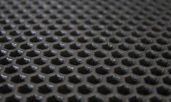
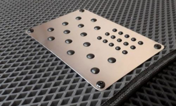
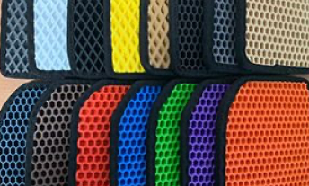

Что такое EVA коврики?



МАТЕРИАЛ
Коврики EVA всесезонные и отличаются уникальной поверхностью материала с ячейками ромбовидной формы. Из-за чего вода не проливается при изъятии ковра и не плещется при езде. Коврики воду не пропускают.
ОТЛИЧИЯ
Резиновые коврики загибаются и лезут на педали. EVA коврики такого не допустят! Специальные липучки держат его в одном положении. При желании, для водителя устанавливается подпятник из рельефного алюминия.
РАСЦВЕТКА
Резиновые коврики загибаются и лезут на педали. EVA коврики такого не допустят! Специальные липучки держат его в одном положении. При желании, для водителя устанавливается подпятник из рельефного алюминия.